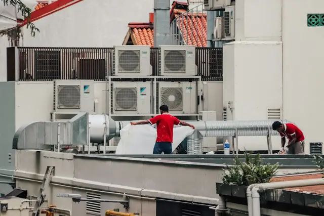
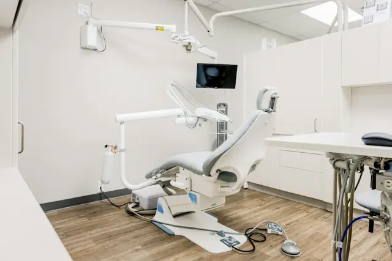
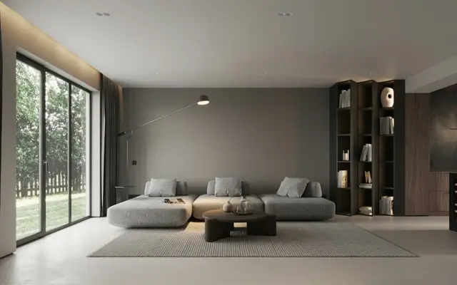

Os pedidos que você já recebe, acompanhados até a venda.
A gente monta um sistema que responde quem pergunta, lembra quem sumiu e mostra quais pedidos viraram dinheiro no caixa.
Sem compromisso. O plano chega no seu WhatsApp em até 2 dias úteis, com o preço por escrito.- Ou veja o que a gente faz pelo seu ramo:
- Empresas de conserto
- Clínicas
- Restaurantes
- Imobiliárias
- Pousadas, serviços e outros
Cliente interessado que vai embora.
Muitas vezes o pedido chegou e ninguém acompanhou.
- Sexta, 23h · pelo site
“Tem quarto para o Réveillon?”
×Ninguém responde até sábado. Ela reserva em outro lugar.
- Terça, 15h · ligação
Chamada perdida
×A recepção estava ocupada. A pessoa liga para o próximo da lista.
- Sábado · orçamento
“Quer que eu reserve?”
×Sem resposta. Na correria, ninguém lembra de voltar a falar com ele.
- Domingo · fim da estadia
“Amei, voltamos com certeza!”
×Foi embora sem avaliar no Google. Quem procura não fica sabendo.
Situações de exemplo.
O que a Growlift faz, em poucas palavras.
O cliente chama.
Pelo WhatsApp, por ligação ou pelo site.
A IA responde na hora.
De dia e de noite, com os seus preços e horários.
Ligação perdida não fica sem resposta.
Se o cliente aceitar, recebe uma mensagem no WhatsApp, e você ganha a tarefa de ligar de volta.
Quem sumiu é lembrado.
Mandou o orçamento e ele não respondeu? Sai uma mensagem de retomada, só para quem autorizou.
Você acompanha até o pagamento.
Cada pedido aparece no seu celular, até virar dinheiro no caixa.
Tudo isso num sistema só, montado para o seu negócio.
- 1º a gente acha a maior dor
- 2º começa pelo que mais trava
- 3º o sistema, se fizer sentido
Veja o que a gente faz pelo seu ramo.

Empresas de conserto
Ar, elétrica, encanamento: ninguém fica sem resposta.
→Ver
Clínicas
Atendimento no WhatsApp e agenda.
→VerRestaurantes
Reservas, pedidos e Pix.
→Ver
Imobiliárias
Carteira de imóveis em dia.
→VerPousadas, serviços e outros
Orçamento, retomada e avaliações.
→Ver
Gente de verdade do outro lado do WhatsApp.
A Growlift é o Lucas e o Antônio. Somos jovens, de São Paulo, e crescemos usando a internet do jeito que o seu cliente usa: pelo celular.
Nós dois montamos os sistemas, as automações e os sites, e atendemos você. Quem conversa com você é quem faz.


Qual é a maior dor do seu negócio hoje?
3 perguntas rápidas, quase tudo com um toque. Em até 2 dias úteis chega no seu WhatsApp o que a gente faria no seu lugar, por onde começar e quanto custa.

 Quem lê é gente. Lucas e Antônio leem cada diagnóstico e montam o plano.
Quem lê é gente. Lucas e Antônio leem cada diagnóstico e montam o plano.
Recebemos!
Em até 2 dias úteis você recebe no WhatsApp o diagnóstico e o plano para o seu negócio. Quem vai ler e responder é o Lucas ou o Antônio.
Dúvidas.
O diagnóstico é pago?
Não. O diagnóstico e o plano são grátis e sem compromisso. Você só paga se quiser começar.
Quanto custa?
Depende do que o seu negócio precisa. Por isso não tem tabela fixa: o preço vem no plano, por escrito, depois do diagnóstico, e só começa se você aprovar.
Vocês mexem no meu perfil do Google?
Se fizer parte do plano, sim: a gente arruma categoria, horário, fotos e link. O perfil continua no seu nome; a gente recebe acesso de gerente, e você pode tirar esse acesso quando quiser. Todo cliente recebe o mesmo convite para avaliar, sem desconto nem brinde em troca.
Vocês garantem mais clientes ou o 1º lugar no Google?
Não. Ninguém pode garantir posição no Google nem número de vendas. O que a gente garante é o combinado por escrito, e o sistema mostra o que aconteceu com cada pedido.
Funciona para o meu ramo?
Se você atende clientes na sua cidade, recebe pedidos de orçamento ou de reserva e conversa pelo WhatsApp, quase sempre tem algo para melhorar: pousadas, restaurantes, serviços como ar-condicionado e limpeza, energia solar, clínicas e lojas. O cardápio em 3D, ainda em teste, é para quem vende comida.
Vocês atendem fora de São Paulo?
Sim. A gente atende negócios do Brasil inteiro. É tudo a distância, com a conversa pelo WhatsApp.
Como a atendente de IA conversa?
Ela fala do jeito do seu negócio, pode ter um nome e usa só as informações que você passou. Se o cliente perguntar sério se é uma pessoa, ela responde que é a assistente do negócio e oferece chamar alguém da equipe. Quando não sabe a resposta, ela chama você.
Quem paga o WhatsApp oficial?
A conta do WhatsApp oficial é do seu negócio, com o seu número. A Meta cobra algumas mensagens direto de você, conforme a tabela dela na época. A gente mostra a estimativa no plano.
Tem fidelidade? Posso desistir?
As condições vêm escritas na proposta e no contrato, antes de começar. E você sempre tem 7 dias para desistir sem multa, a contar da assinatura do contrato.
Vocês cobram comissão sobre as vendas?
Não. A Growlift cobra o valor combinado no plano, sem comissão sobre os seus pedidos ou serviços. A Meta cobra à parte, direto do seu negócio, as mensagens do WhatsApp oficial.
E se eu já tiver site ou sistema?
Melhor ainda: a gente trabalha junto com o que você já usa. Conte no diagnóstico qual é, e o plano parte dele.